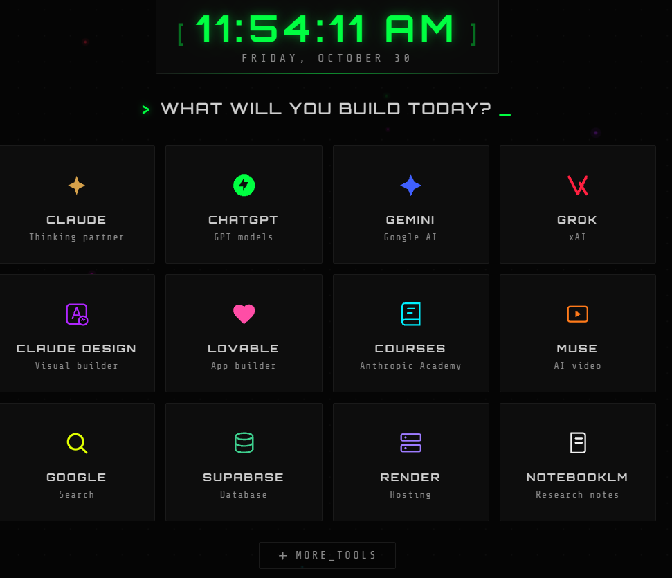

What will you build today?
A Chrome extension that replaces your new tab page with a launchpad for AI tools. Every new tab puts your favorites one click away, so opening an AI assistant becomes the default.
Download ZIP How to install View the code
What it does
- One-click launchpad. A grid of cards linking to popular AI and developer tools. Links open in the current tab.
- Live clock and date. Updates every second in your locale.
- More tools row. A collapsible set of secondary links.
- No permissions, no tracking. The extension requests no permissions, stores no data and runs no analytics.
Included links
ClaudeThinking partner
ChatGPTGPT models
GeminiGoogle AI
GrokxAI
Claude DesignVisual builder
LovableApp builder
CoursesAnthropic Academy
MuseAI video
GoogleSearch
SupabaseDatabase dashboard
RenderHosting dashboard
NotebookLMResearch notes
The more tools row adds v0, Perplexity, Colab, Sana, Anthropic and OpenAI.
Install
The extension loads unpacked. In Chrome it appears as AI Reminder.
- Download the ZIP and unzip it, or clone the repository.
- Open
chrome://extensions. - Turn on Developer mode in the top right.
- Click Load unpacked and select the repository folder.
- Open a new tab.
Customize
- Add or remove a tool. Edit the
ai-cardblocks innewtab.html, or theextra-btnlinks for the more tools row. Copy a block, then change the link, name, description and icon. - Change colors. Edit
styles.css. Each card has its own class, such as.claude, for per-brand colors. - Tweak the clock or particles. Edit
newtab.js.